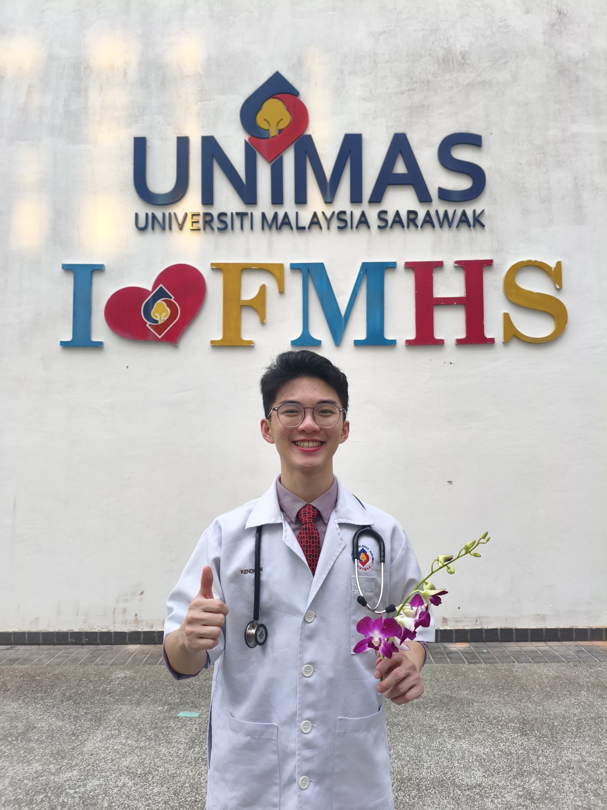

Medical graduate from Universiti Malaysia Sarawak (UNIMAS) with sustained academic distinction and rigorous clinical exposure across tertiary, district, and community care settings. Highly motivated to commence housemanship training with the Ministry of Health Malaysia (KKM), demonstrating sharp diagnostic reasoning, structured ward communication, and versatile adaptability refined through clinical medicine and corporate strategic training.

Universiti Malaysia Sarawak (UNIMAS)
Underwent 5 years of comprehensive medical curriculum comprising 2 pre-clinical years of anatomy, physiology, and pathology followed by 3 years of rigorous hospital rotations across tertiary and district healthcare networks. Consistent academic standout with honors.
Completed specialized clinical elective attachment within the Obstetrics & Gynaecology and Cardiology departments at Chang Gung Memorial Hospital, Linkou (one of Asia's premier JCI-accredited tertiary medical centres). Immersed in advanced cardiac catheterisation observations, fetal echocardiography, high-risk maternal care rounds, and international healthcare protocol comparisons.
Completed one-year intensive science pre-university preparation. Mastered advanced biological sciences, physical chemistry, and academic team leadership.
Pure science stream high school education with proven record in extracurricular athletics, leadership, and national chemistry competitions.
Participated in hands-on simulation with body donor mentors; practised basic tissue handling and appreciated anatomical structures with a profound emphasis on medical ethics, surgical humility, and patient gratitude.
Engaged in supervised regional cadaveric dissection, reinforcing complex topographical anatomical relationships directly relevant to everyday clinical procedures and surgical safely margins.
Received practical guidance on operating theatre etiquette, sterile gowning and gloving, scalpel grip, simple incision, two-handed/instrument knot tying, vessel ligation, and interrupted and subcuticular suturing.
Attended plenary sessions and symposiums on minimally invasive image-guided techniques, endovascular procedures, and interventional radiological management in acute haemorrhage and oncology.
Joined UNIMAS delegation for Asian Medical Students' Exchange Programme; bilateral academic seminars, community visits, and health delivery comparisons.
Participated as an institutional team member representing UNIMAS in rapid diagnostic identification of clinical parasites and vectors.
In Scenario 1 of the K-Youth Development Programme (KYDP), I functioned as an executive in the Business Analysis Team at IHH Healthcare. Tasked with translating the comprehensive 2024 IHH Sustainability Report into actionable customer-facing assets, I synthesized high-impact ESG data into concrete commercial value pillars—demonstrating structured problem framing, generative AI utilization, and concise corporate communication.
3 Strategic Documents Delivered
Formal email to the Marketing Department introducing the sustainability insights memo. Excludes internal metrics and frames high-impact achievements (Life Renewed, electric ambulance, AI diagnostics) across four strategic customer-facing pillars.
Actionable 1-page memorandum categorising sustainability data into Innovation (AI chest X-ray detection, smart fall prevention), Community (946 cancer cases, 3.1M screenings), Environment (electric bike ambulance, 90% plastic drop), and Global Accolades (TIME & Forbes).
In-depth 7-page orientation guide welcoming new executives. Outlines IHH's identity across 80 hospitals in 10 countries, the "Care. For Good." sustainability architecture, psychological safety, and leadership development programs.
Multimedia Reflections & Orientation Video
Personal verbal reflection assessing three critical skill learnings: the Diverge/Converge problem-solving model, data extraction via generative AI, and the STAR elevator pitch delivery.
Synthesia AI-powered corporate orientation video produced to induct incoming executives. Highlights 80+ hospital network scale, patient safety initiatives, desflurane gas reduction, and the first 90-day mindset.
Open to professional opportunities, KKM housemanship inquiries, and medical collaborations.